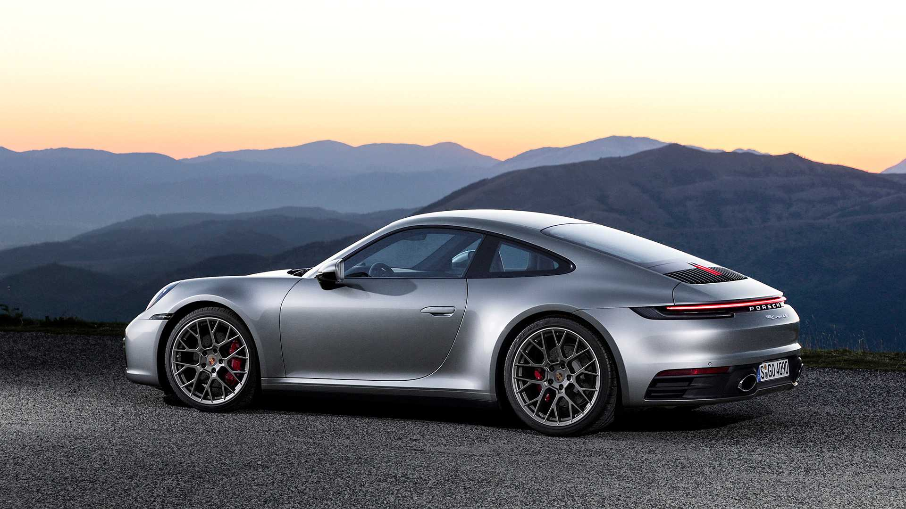
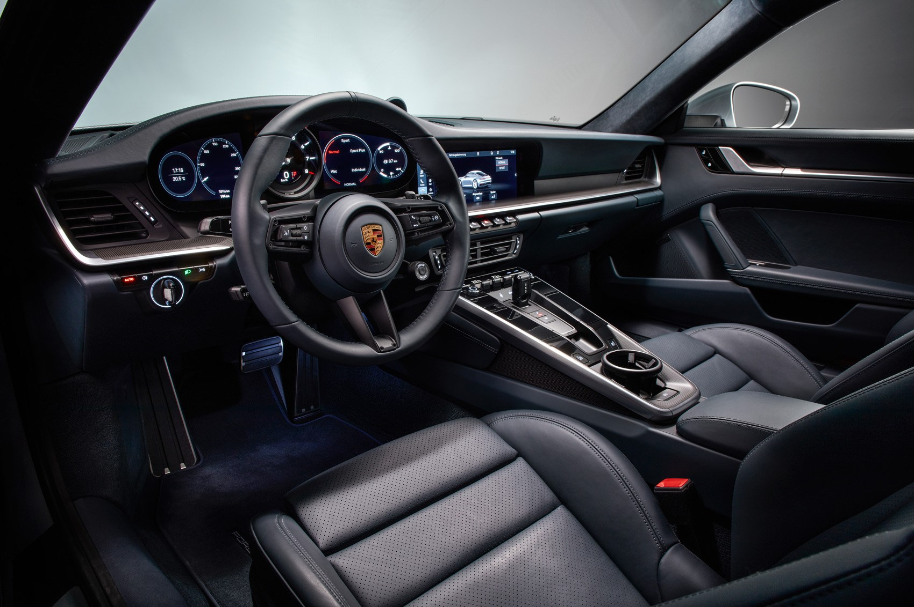
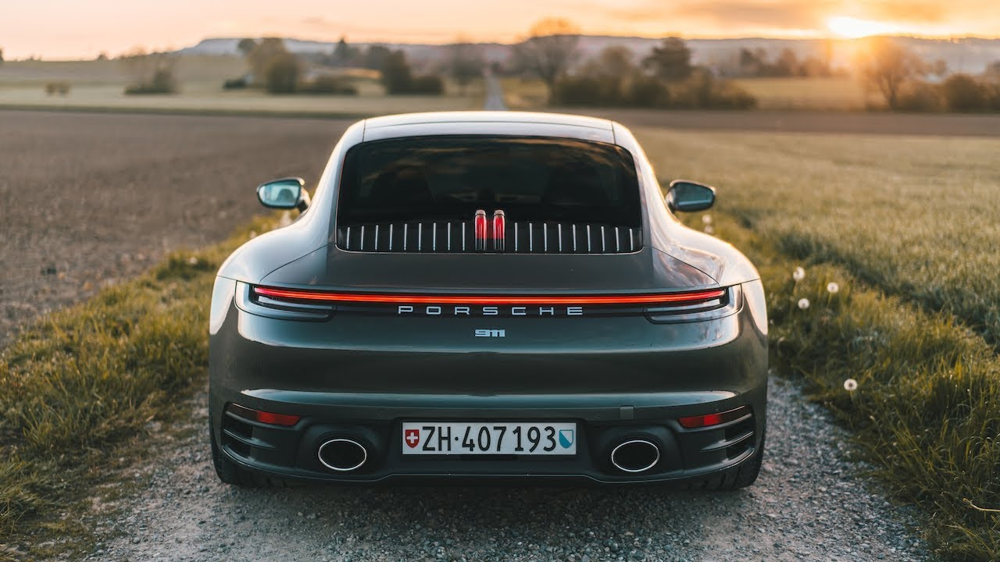

De-a lungul timpului, 911 pare sa devina din ce in ce mai mare cu fiecare generatie a sa. 992 nu face exceptie, fiind o masina relativ mare, care ofera un comfort sporit. In ciuda acestor lucurui, noul 911 nu a pierdut pedegree-ul sportiv si ramane o masina foarte distractiva si agila.
Noul 911 are tot motorul montat in spate, dar are foarte multe imbunatatiri si modificari vizuale. Interiorul a fost complet modificat, cele 5 cadrane din bord fiind inlocuite acum de ecrane, pastrand totusi in mijloc clasicul turometru analog. La exterior cea mai mare modificare este in spate, unde stopurile au fost redesenate si toate modelele au primit light-bar-ul care exista in trecut doar la modelele cu tractiune integrala.
Cu un pret de peste 110.000 de euro pentru modelul de baza ce are 385 de cai putere, generatia 992 a modelului 911 de la Porsche nu este ieftin si trebuie sa te gandesti bine inainte sa-ti iei unul, dar cu siguranta nu te va dezamagi.
